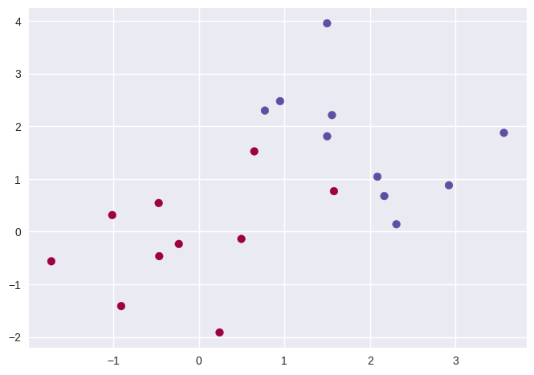
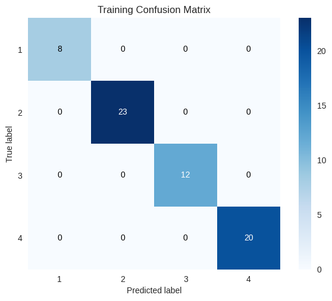

# imports and setup
%matplotlib inline
import numpy as np
import pandas as pd
import matplotlib.pyplot as plt
pd.set_option('precision', 4) # number precision for pandas
pd.set_option('display.max_rows', 12)
pd.set_option('display.max_columns', 12)
pd.set_option('display.float_format', '{:20,.5f}'.format) # get rid of scientific notation
plt.style.use('seaborn') # pretty matplotlib plots
9.6.1 Support Vector Classifier¶
np.random.seed(42)
X = np.random.normal(size=40).reshape(20,2)
y = np.concatenate((np.ones(10, dtype=np.int64)*-1, np.ones(10, dtype=np.int64)))
X[y == 1, :] += 1
plt.scatter(X[:, 0], X[:, 1], c=(3-y), cmap='Spectral'); # why color 3-y?

from sklearn.svm import SVC
svc = SVC(kernel='linear', C=10)
svc.fit(X, y)
SVC(C=10, kernel='linear')
# using the excellent mlxtend package
from mlxtend.plotting import plot_decision_regions
plot_decision_regions(X, y, clf=svc, X_highlight=svc.support_vectors_);

# support vectors
pd.DataFrame(svc.support_vectors_, index=svc.support_)
| 0 | 1 | |
|---|---|---|
| 0 | 0.49671 | -0.13826 |
| 1 | 0.64769 | 1.52303 |
| 2 | -0.23415 | -0.23414 |
| 3 | 1.57921 | 0.76743 |
| 4 | -0.46947 | 0.54256 |
| 6 | 0.24196 | -1.91328 |
| 11 | 1.06753 | -0.42475 |
| 12 | 0.45562 | 1.11092 |
| 13 | -0.15099 | 1.37570 |
| 14 | 0.39936 | 0.70831 |
| 18 | 1.20886 | -0.95967 |
| 19 | -0.32819 | 1.19686 |
svc2 = SVC(kernel='linear', C=0.1)
svc2.fit(X, y)
plot_decision_regions(X, y, clf=svc2, X_highlight=svc2.support_vectors_);

# support vectors
pd.DataFrame(svc2.support_vectors_, index=svc2.support_)
| 0 | 1 | |
|---|---|---|
| 0 | 0.49671 | -0.13826 |
| 1 | 0.64769 | 1.52303 |
| 2 | -0.23415 | -0.23414 |
| 3 | 1.57921 | 0.76743 |
| 4 | -0.46947 | 0.54256 |
| ... | ... | ... |
| 15 | 0.39829 | 2.85228 |
| 16 | 0.98650 | -0.05771 |
| 17 | 1.82254 | -0.22084 |
| 18 | 1.20886 | -0.95967 |
| 19 | -0.32819 | 1.19686 |
18 rows × 2 columns
from sklearn.model_selection import GridSearchCV
svc3 = SVC(kernel='linear')
c_space = np.array([0.001, 0.01, 0.1, 1, 5, 10, 100])
param_grid = {'C': c_space}
tune = GridSearchCV(svc3, param_grid, cv=10)
tune.fit(X, y)
tune.cv_results_
tune.best_params_
{'C': 0.001}
from sklearn.utils import resample
np.random.seed(42)
X_test = np.random.normal(size=40).reshape(20,2)
y_test = resample(np.concatenate((np.ones(10, dtype=np.int64)*-1, np.ones(10, dtype=np.int64))),
replace=True,
n_samples=20, random_state=42)
X_test[y_test == 1, :] += 1
y_pred = tune.predict(X_test)
from mlxtend.evaluate import confusion_matrix
from mlxtend.plotting import plot_confusion_matrix
plot_confusion_matrix(confusion_matrix(y_test, y_pred));

svc4 = SVC(kernel='linear', C=0.01)
svc4.fit(X_test, y_test)
y_pred4 = svc4.predict(X_test)
plot_confusion_matrix(confusion_matrix(y_test, y_pred4));

X[y == 1, :] += 1.1
plt.scatter(X[:, 0], X[:, 1], c=(y+5)/2, cmap='Spectral');

svc5 = SVC(kernel='linear', C=1e5)
svc5.fit(X, y)
plot_decision_regions(X, y, clf=svc5, X_highlight=svc5.support_vectors_);

svc6 = SVC(kernel='linear', C=1)
svc6.fit(X, y)
plot_decision_regions(X, y, clf=svc6, X_highlight=svc6.support_vectors_);

9.6.2 Support Vector Machine¶
np.random.seed(42)
X = np.random.normal(size=400).reshape(200, 2)
X[0:100, :] += 2
X[100:150, :] -= 2
y = np.concatenate((np.full(150, 1, dtype=np.int64), np.full(50, 2, dtype=np.int64)))
plt.scatter(X[:, 0], X[:, 1], c=y, cmap='Spectral');

from sklearn.model_selection import train_test_split
X_train, X_test, y_train, y_test = train_test_split(X, y, train_size=0.5, test_size=0.5, random_state=42)
svm = SVC(kernel='rbf', gamma=1, C=1)
svm.fit(X_train, y_train)
plot_decision_regions(X_train, y_train, clf=svm, X_highlight=svm.support_vectors_);

svm2 = SVC(kernel='rbf', gamma=1, C=1e5)
svm2.fit(X_train, y_train)
plot_decision_regions(X_train, y_train, clf=svm2, X_highlight=svm2.support_vectors_);

svm3 = SVC(kernel='rbf')
c_space = np.array([0.1, 1, 10, 100, 1000])
g_space = np.array([0.5, 1, 2, 3, 4])
param_grid = {'C': c_space, 'gamma': g_space}
tune = GridSearchCV(svm3, param_grid, cv=10)
tune.fit(X_train, y_train)
tune.cv_results_
tune.best_params_
{'C': 1.0, 'gamma': 0.5}
y_pred = tune.predict(X_test)
# let's try another pretty confusion matrix implementation:
import scikitplot as skplt
skplt.metrics.plot_confusion_matrix(y_test, y_pred);

9.6.3 ROC Curves¶
svm4 = SVC(kernel='rbf', gamma=2, C=1, probability=True)
svm4.fit(X_train, y_train)
svm5 = SVC(kernel='rbf', gamma=50, C=1, probability=True)
svm5.fit(X_train, y_train)
y_probas4 = svm4.predict_proba(X_train)
y_probas5 = svm5.predict_proba(X_train)
f, axes = plt.subplots(1, 2, sharex=False, sharey=False)
f.set_figheight(6)
f.set_figwidth(15)
skplt.metrics.plot_roc_curve(y_train, y_probas4, curves=['each_class'], ax=axes[0])
skplt.metrics.plot_roc_curve(y_train, y_probas5, curves=['each_class'], ax=axes[1]);
/opt/hostedtoolcache/Python/3.8.12/x64/lib/python3.8/site-packages/sklearn/utils/deprecation.py:87: FutureWarning: Function plot_roc_curve is deprecated; This will be removed in v0.5.0. Please use scikitplot.metrics.plot_roc instead.
warnings.warn(msg, category=FutureWarning)
/opt/hostedtoolcache/Python/3.8.12/x64/lib/python3.8/site-packages/sklearn/utils/deprecation.py:87: FutureWarning: Function plot_roc_curve is deprecated; This will be removed in v0.5.0. Please use scikitplot.metrics.plot_roc instead.
warnings.warn(msg, category=FutureWarning)

y_probas_test_4 = svm4.predict_proba(X_test)
y_probas_test_5 = svm5.predict_proba(X_test)
f, axes = plt.subplots(1, 2, sharex=False, sharey=False)
f.set_figheight(6)
f.set_figwidth(15)
skplt.metrics.plot_roc_curve(y_test, y_probas_test_4, curves=['each_class'], ax=axes[0])
skplt.metrics.plot_roc_curve(y_test, y_probas_test_5, curves=['each_class'], ax=axes[1]);
/opt/hostedtoolcache/Python/3.8.12/x64/lib/python3.8/site-packages/sklearn/utils/deprecation.py:87: FutureWarning: Function plot_roc_curve is deprecated; This will be removed in v0.5.0. Please use scikitplot.metrics.plot_roc instead.
warnings.warn(msg, category=FutureWarning)
/opt/hostedtoolcache/Python/3.8.12/x64/lib/python3.8/site-packages/sklearn/utils/deprecation.py:87: FutureWarning: Function plot_roc_curve is deprecated; This will be removed in v0.5.0. Please use scikitplot.metrics.plot_roc instead.
warnings.warn(msg, category=FutureWarning)

9.6.4 SVM with Multiple Classes¶
np.random.seed(42)
X = np.random.normal(size=400).reshape(200, 2)
X[0:100, :] += 2
X[100:150, :] -= 2
y = np.concatenate((np.full(150, 1, dtype=np.int64), np.full(50, 2, dtype=np.int64)))
X = np.concatenate((X, np.random.normal(size=100).reshape(50, 2)))
y = np.concatenate((y, np.full(50, 0, dtype=np.int64)))
X[y == 0, 1] += 2
plt.scatter(X[:, 0], X[:, 1], c=y+1, cmap='Spectral');

svm_m = SVC(kernel='rbf', C=10, gamma=1)
svm_m.fit(X, y)
plot_decision_regions(X, y, clf=svm_m, X_highlight=svm_m.support_vectors_);

9.6.5 Application to Gene Expression Data¶
khan_X_train = pd.read_csv('../datasets/Khan_xtrain.csv', index_col=0)
khan_y_train = pd.read_csv('../datasets/Khan_ytrain.csv', index_col=0)
khan_X_test = pd.read_csv('../datasets/Khan_xtest.csv', index_col=0)
khan_y_test = pd.read_csv('../datasets/Khan_ytest.csv', index_col=0)
khan_X_train.shape, khan_X_test.shape, len(khan_y_train), len(khan_y_test)
((63, 2308), (20, 2308), 63, 20)
khan_y_train.iloc[:, 0].value_counts(sort=False)
2 23
4 20
3 12
1 8
Name: x, dtype: int64
khan_y_test.iloc[:, 0].value_counts(sort=False)
3 6
2 6
4 5
1 3
Name: x, dtype: int64
out = SVC(kernel='linear', C=10)
out.fit(khan_X_train, khan_y_train.iloc[:, 0])
khan_y_train_pred = out.predict(khan_X_train)
skplt.metrics.plot_confusion_matrix(khan_y_train,
khan_y_train_pred,
title='Training Confusion Matrix');

khan_y_test_pred = out.predict(khan_X_test)
skplt.metrics.plot_confusion_matrix(khan_y_test,
khan_y_test_pred,
title='Test Confusion Matrix');
